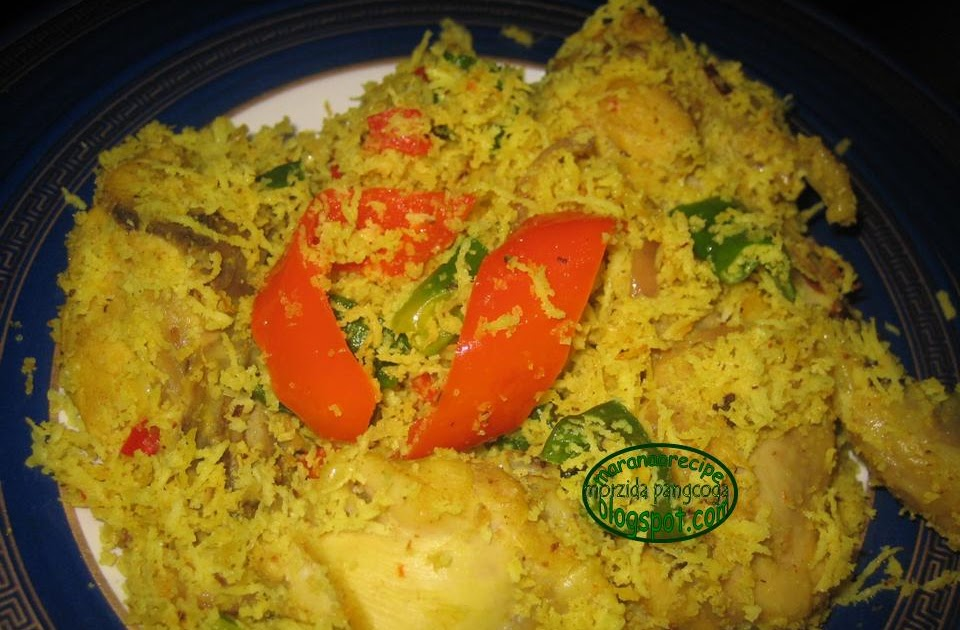

What is Piaparan?
Piaparan A Manok (Chicken Piaparan) is a chicken dish that is cooked with coconut milk, turmeric and a special paste called 'Palapa'. The cooked chicken is taken out from the soup and then cooked with additional grated coconut which makes this dish really stand out. This is perfect with white rice.
There are three main dishes that were always present in our home during Eid Moms Filipino Beefsteak which I still havent figured out how to cook it, Kiyalawagan A Karne a beef dish very similar to this one and Piaparan A Manok Chicken Piaparan.
Piaparan is a term means 'with papar'. Chicken Piaparan then translates to Chicken with Papar. Papar is the coconut part of the dish-not the coconut to be squeezed but the coconut part cooked during the last step of the dish.
Palapa (click here to see what it looks like) is a paste used by Maranao people in the Philippines. It is made by grinding sakurab or lansuna, ginger, and chilies. I will make a post about it when Ive managed to get myself 'real' sakurab. I think it deserves a separate post. Moving on, the second step is to cook the soup with the chicken. It is mostly sauteeing and adding FRESH coconut milk and cream. The last step is making the papar which is also sauteeing and cooking the freshly shredded coconut.
Ingredients :
For the Palapa:
½ cup white part of spring onion sliced
¼ cup chopped ginger
1-2 birds eye chili
Other ingredients:
500 g chicken cut into pieces (washed, skins removed)
1 + 1 medium onion sliced
3 + 3 cloves garlic crushed
1 + 1 medium tomatoes sliced
Bell pepper sliced
Green part of spring onion
1-2 + 1/2 tsp turmeric powder
3 + 1 cups grated coconut
375 + 500 ml water
Salt to taste
Cooking oil
Instructions :
Bowl 1
put 3 cups of grated coconut and 375 ml water. Squeeze, squeeze, squeeze until you get a very beautiful coconut cream.
Bowl 2 top with the strainer, pour the contents from bowl 1 and squeeze until all liquid has been squeezed out. Set aside. Take note to save the used grated coconut. (This is coconut cream - thicker one)
Now, you have the used grated coconut. Go back to Bowl 1 and put the used grated coconut and add 500 ml water and again, squeeze, squeeze, squeeze…
Bowl 3 top with the strainer, pour the contents from bowl 1 and squeeze until all liquid has been squeezed out. (This is coconut milk - the thinner one)
Now, you can throw the used grated coconut.
Clearly, you have the coconut cream and milk in separate bowls. Set them aside.
To cook the chicken piaparan:
In a pot over medium-high heat, add cooking oil. Sauté half of the garlic, onion, bell pepper, and tomatoes. Add half of the palapa mixture.
Add in chicken pieces, cover and cook for 5 minutes, making sure to check them to prevent burning.
Add turmeric powder, making sure to save some for later in case you need it) and the coconut milk from bowl 3. Cover and cook for 15 minutes.
Add the coconut cream from bowl 2 and let it boil.
Turn off the heat. Add spring onions and salt.
In a skillet or deep frying pan over a medium-heat, add oil. Sauté the remaining garlic, onion, bell peppers, and tomatoes. Add the remaining palapa.
Add the remaining 1 cup freshly grated coconut (remember that you have 3 + 1 cups – you squeezed 3 cups and you have the remaining 1 cup). Add turmeric powder and salt, then mix until even in color. Remove the chicken from the soup and add to the skillet. Add about ¼ cup of the soup. Mix well and cook for another minute or until it gets almost dry. Add spring onions. Turn off the heat and transfer to a serving plate and the soup in a separate bowl.